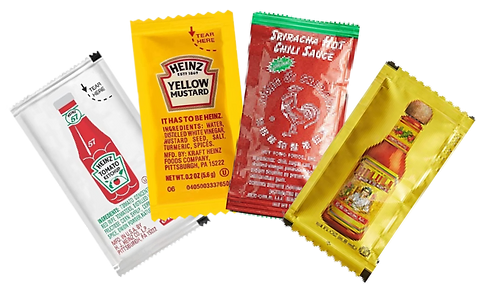
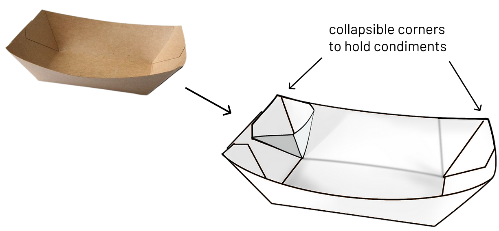
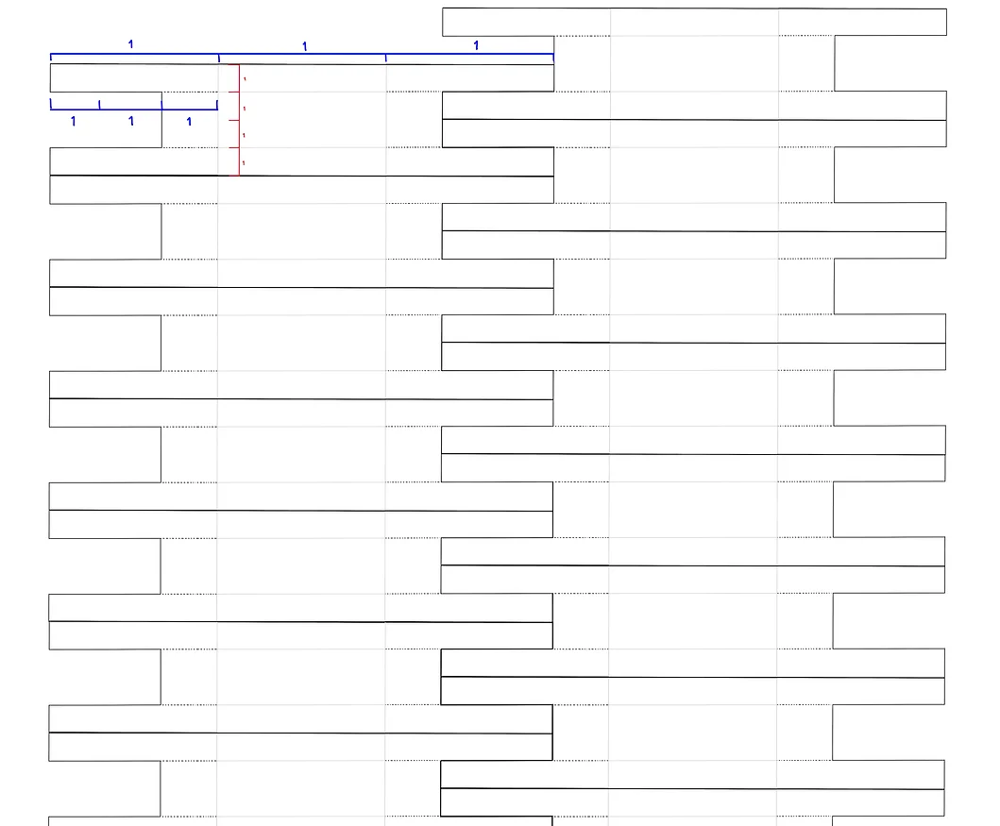
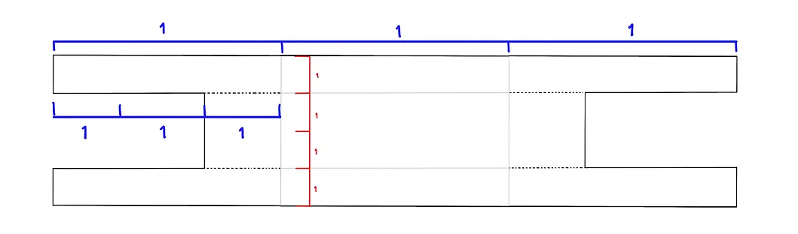

Food Tray Redesign
Plastic Condiment Packets

- 855 billion single-use plastic condiment packets are
trashed globally every year.
- They cannot be recycled, therefore all end up in landfills
- They take centuries to fully degrade
- Every stage of plastic packet production generates
greenhouse gas emissions
Brainstorming Questions
- Where and why do people use condiment packets?
- What aspect of this issue should I focus on?
- What can I create to reduce the use and waste?
Ideation
- Changing the original food tray design to have a built-in
condiment container

- Keeps condiments and food separate
- Encourages customers to use refillable condiment dispensers
rather than grabbing plastic condiment packets
- Allows for 4 different condiments on one tray
Production Template Mockup

Single Tray Zoomed In + Dimension Ratios

- Pros: Minimal paper wastage
- Cons: Folding and gluing process may be complicated
 @aproduct.aday
@aproduct.aday